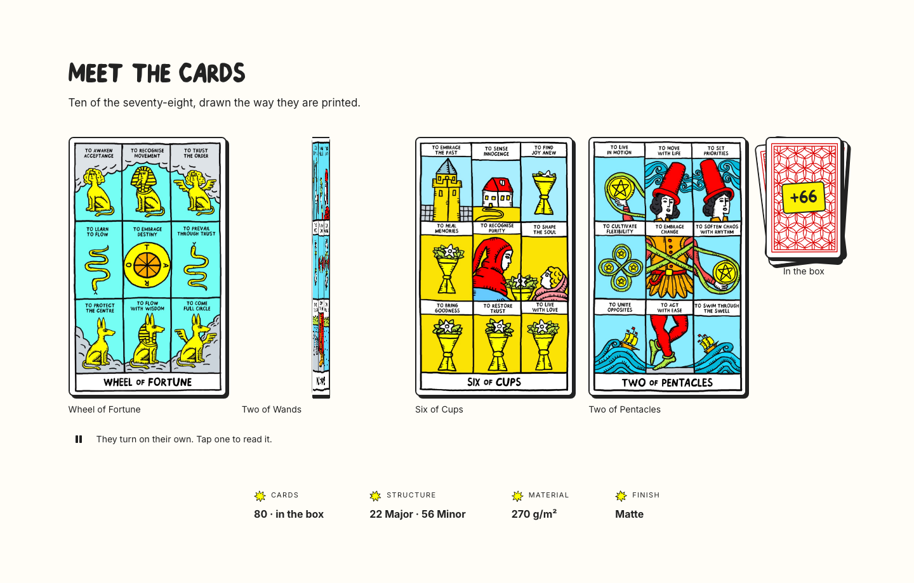
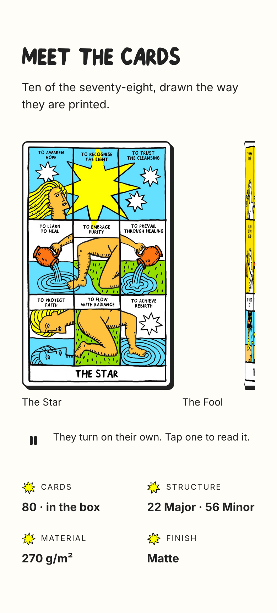
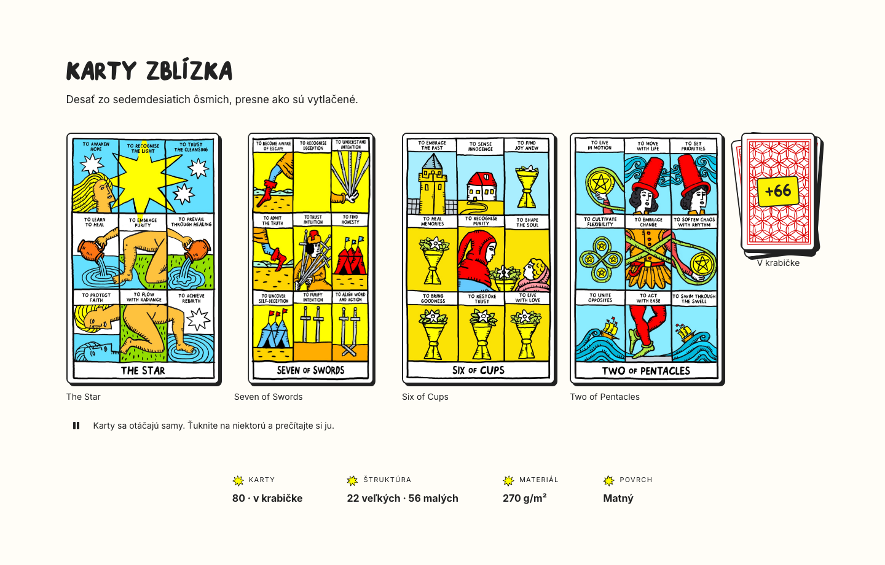
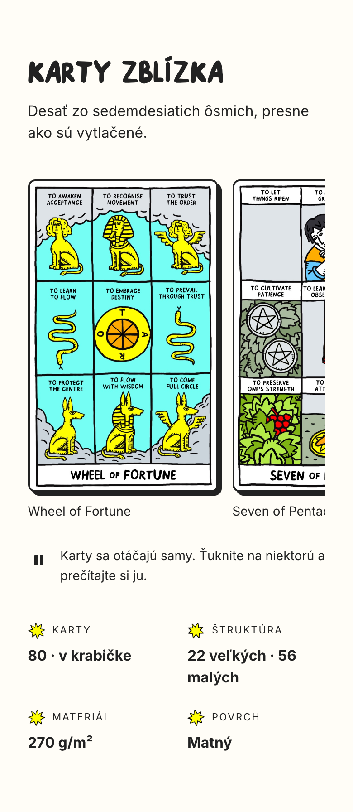
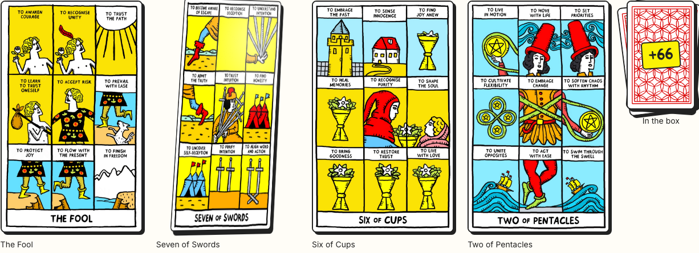
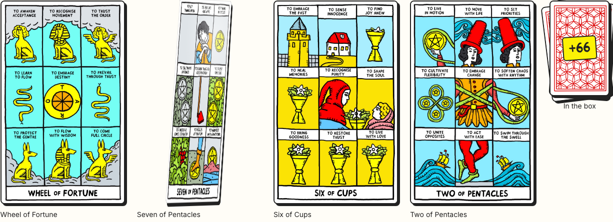
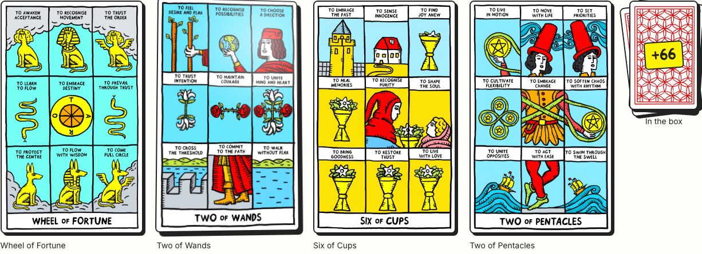
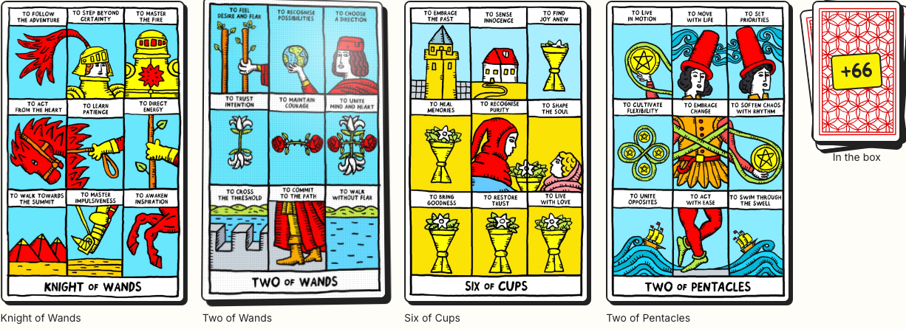
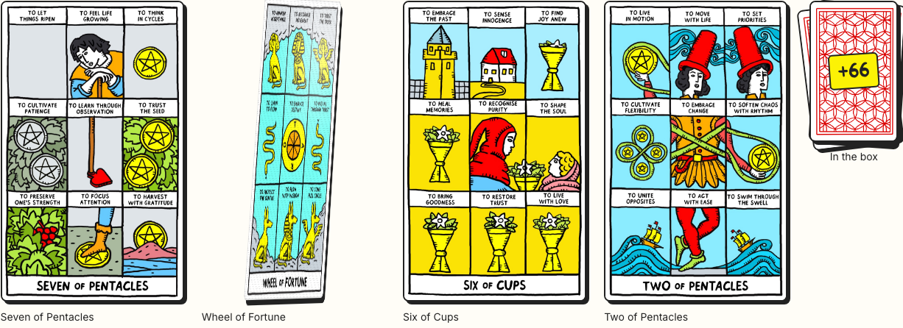

Clickable: page-sections.html?sec=s3 · add &feel=lift,shadow,edge,parallax,grain,settle to try the paper-feel options, &lang=sk for Slovak.




The card rises 6px and its hard shadow leans the way you tilt it. Quietest of the lot; nothing new on screen.

A thin white highlight runs along the card edge as it turns towards you, like light catching the printed border.

The artwork inside shifts a couple of pixels against the frame, so the card has a little depth instead of being a flat photo.

A faint print texture appears while the pointer is on the card and fades when it leaves.

Lift, shadow, edge light, parallax, grain, plus a small settle wobble after each flip.
